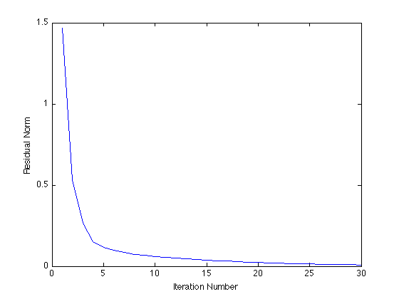

% Argyris Zymnis, Joelle Skaf, Stephen Boyd % % We are given a matrix A in R^{m*n} % and are interested in solving the problem: % % minimize ||A - Y*X||_F % subject to Y >= 0, X >= 0 % % where Y in R{m*k} and X in R{k*n}. % This script generates a random matrix A and obtains an % *approximate* solution to the above problem by first generating % a random initial guess for Y and the alternatively minimizing % over X and Y for a fixed number of iterations. % Generate data matrix A rstate = rand('state'); m = 10; n = 10; k = 5; A = rand(m,k)*rand(k,n); % Initialize Y randomly Y = rand(m,k); % Perform alternating minimization MAX_ITERS = 30; residual = zeros(1,MAX_ITERS); for iter = 1:MAX_ITERS cvx_begin quiet if mod(iter,2) == 1 variable X(k,n) X >= 0; else variable Y(m,k) Y >= 0; end minimize(norm(A - Y*X,'fro')); cvx_end fprintf(1,'Iteration %d, residual norm %g\n',iter,cvx_optval); residual(iter) = cvx_optval; end % Plot residuals plot(residual); xlabel('Iteration Number'); ylabel('Residual Norm'); % Display results disp( 'Original matrix:' ); disp( A ); disp( 'Left factor Y:' ); disp( Y ); disp( 'Right factor X:' ); disp( X ); disp( 'Residual A - Y * X:' ); disp( A - Y * X ); fprintf( 'Residual after %d iterations: %g\n', iter, cvx_optval );
Iteration 1, residual norm 3.94785
Iteration 2, residual norm 0.769086
Iteration 3, residual norm 0.606551
Iteration 4, residual norm 0.512622
Iteration 5, residual norm 0.393939
Iteration 6, residual norm 0.315434
Iteration 7, residual norm 0.238842
Iteration 8, residual norm 0.186361
Iteration 9, residual norm 0.146201
Iteration 10, residual norm 0.119986
Iteration 11, residual norm 0.0998441
Iteration 12, residual norm 0.0843896
Iteration 13, residual norm 0.0718356
Iteration 14, residual norm 0.0613885
Iteration 15, residual norm 0.0526807
Iteration 16, residual norm 0.0452945
Iteration 17, residual norm 0.0391095
Iteration 18, residual norm 0.0338531
Iteration 19, residual norm 0.0294337
Iteration 20, residual norm 0.025664
Iteration 21, residual norm 0.0224614
Iteration 22, residual norm 0.0197134
Iteration 23, residual norm 0.017333
Iteration 24, residual norm 0.0152406
Iteration 25, residual norm 0.0134003
Iteration 26, residual norm 0.011777
Iteration 27, residual norm 0.0103465
Iteration 28, residual norm 0.00908502
Iteration 29, residual norm 0.00797451
Iteration 30, residual norm 0.00699685
Original matrix:
Columns 1 through 7
0.7866 1.7239 1.3452 1.5511 1.3530 1.1933 1.1612
1.1583 1.4047 1.3236 1.2878 1.1097 1.2681 1.4426
1.2201 1.3939 0.9230 1.0590 1.1370 1.1894 1.0099
1.6507 2.3825 2.0352 2.1016 1.9563 1.8618 1.9193
1.5864 1.8379 1.2313 1.3710 1.5395 1.5604 1.3822
1.3007 2.0306 1.5088 1.6731 1.6468 1.6124 1.6143
0.8572 1.6265 1.4736 1.5347 1.3371 1.1011 1.1438
0.5591 1.0591 1.0106 1.0441 0.8555 0.7072 0.7349
1.4222 2.2313 1.6812 1.9507 1.7405 1.6636 1.4519
0.9937 1.4187 0.4619 0.8417 1.1113 1.2318 0.9158
Columns 8 through 10
1.7782 0.9493 1.5523
1.7846 0.6617 2.1024
1.4058 0.7613 1.3088
2.7211 1.4302 2.6015
1.9030 1.0934 1.7194
2.1933 1.1256 2.0814
1.8244 1.0729 1.5531
1.2005 0.6775 1.0536
2.2397 1.1687 2.0234
1.1330 0.5926 0.9621
Left factor Y:
1.0e+05 *
0.0000 0.0000 0.0000 2.1168 0.0000
0.0000 0.0000 0.0000 0.0000 0.0000
0.0000 0.0000 0.0000 2.5476 0.0000
0.0000 0.0000 0.0000 5.0586 0.0000
0.0000 0.0000 0.0000 5.3585 0.0000
0.0000 0.0000 0.0000 4.1992 0.0000
0.0000 0.0000 0.0000 4.0904 0.0000
0.0000 0.0000 0.0000 1.7905 0.0000
0.0000 0.0000 0.0000 1.2085 0.0000
0.0000 0.0000 0.0000 2.2985 0.0000
Right factor X:
Columns 1 through 7
0.3098 0.5913 0.9738 0.8028 0.4787 0.4076 0.6940
0.9900 0.9192 0.3031 0.4908 0.7101 0.9991 0.8312
0.2808 0.1141 0.5344 0.3549 0.1240 0.0000 0.0048
0.0000 0.0000 0.0000 0.0000 0.0000 0.0000 0.0000
0.9092 2.0158 0.6572 1.3862 1.4823 1.4247 0.7690
Columns 8 through 10
0.9972 0.4037 1.1560
0.8375 0.2622 1.0135
0.3097 0.2645 0.2437
0.0000 0.0000 0.0000
1.3240 0.8026 0.7696
Residual A - Y * X:
Columns 1 through 7
-0.0004 -0.0006 0.0004 -0.0001 -0.0003 0.0013 -0.0002
0.0000 -0.0002 0.0001 -0.0000 -0.0002 0.0003 -0.0002
0.0005 0.0007 -0.0006 0.0001 0.0004 -0.0017 0.0002
0.0001 0.0001 -0.0001 0.0000 0.0001 -0.0003 0.0001
0.0003 0.0005 -0.0003 0.0001 0.0002 -0.0011 0.0003
-0.0006 -0.0010 0.0008 -0.0001 -0.0005 0.0023 -0.0003
0.0002 0.0002 -0.0001 0.0000 0.0001 -0.0005 0.0002
0.0003 0.0004 -0.0003 0.0001 0.0002 -0.0011 0.0002
0.0006 0.0010 -0.0008 0.0001 0.0006 -0.0024 0.0002
-0.0010 -0.0005 -0.0008 -0.0008 -0.0003 0.0041 -0.0002
Columns 8 through 10
-0.0000 0.0002 -0.0002
-0.0001 -0.0001 0.0003
0.0000 -0.0002 0.0003
0.0000 -0.0001 -0.0000
0.0001 -0.0003 0.0001
0.0000 0.0003 -0.0004
0.0001 -0.0002 -0.0001
0.0000 -0.0002 0.0001
-0.0001 -0.0002 0.0005
-0.0006 0.0000 -0.0011
Residual after 30 iterations: 0.00699685
